文字アトリエ
モジアトリエ
すぐ起動して、すぐ書ける。
速くてシンプルなテキストエディタです。思いついたことのメモ、設定ファイルの手直し、Markdown での下書き。毎日の文字の作業を、待たずに、迷わずに済ませられます。Shift-JIS や CRLF のファイルも、開いたときの形式のまま保存します。
- Mac
- iPhone
- iPad
- 一度の購入で全部の端末に
- 通信なし・データの収集なし
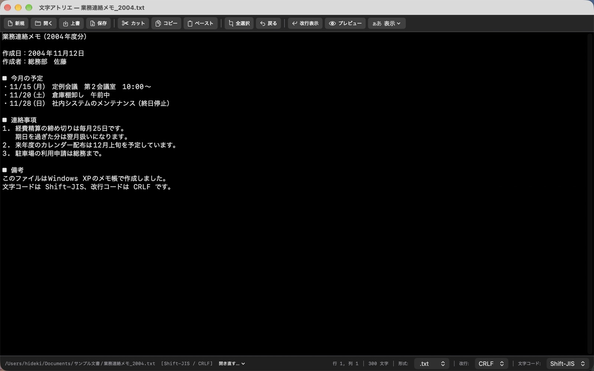
2026年11月に、アプリの名前を「MojiAtelier」から「文字アトリエ」に変えました。読み方・機能・使い方は変わりません。
シンプルなまま、困らない
ボタンは新規・開く・上書・保存など、必要なものだけ。そのうえで、テキストを扱うときに困りがちなところを押さえています。
起動が速く、迷わない
開けばすぐ入力できます。文字数はリアルタイムに表示。未保存のまま閉じようとすると確認が出るので、書いたものを失いません。
文字コードも改行も、そのまま保存
文字コードと改行コード（CRLF／LF）を自動で見分け、画面下に常に表示。「上書」すれば開いたときと同じ形式で保存します。Windows のメモ帳で作ったファイルも、編集後そのまま Windows で開けます。
SD カードや USB メモリを直接編集
カードや USB メモリのファイルを開いて、同じファイルに上書きできます。アプリ側に写しは作らないので、カードを外せば iPhone・iPad に中身は残りません。
形式を変えて保存もできる
画面下のメニューで文字コードと改行コードを選び直して保存。古い Shift-JIS のファイルを UTF-8 にそろえる、といった変換も1回の保存で済みます。
改行や空白がひと目で分かる
改行マーク、全角スペース（□）とタブ（→）、行番号を表示できます。どれも画面に描くだけで、本文には何も書き込みません。
Markdown とプレビュー
.md では、見出し・太字・表などを1回で入れるボタン列と、書式どおりに見られるプレビューが使えます。Mac と iPad は編集画面と横に並べられます。
検索と置換・配色・印刷
検索と置換、文字の大きさの変更、黒背景とクリーム背景の切り替え、最近使ったファイル（10件）、印刷と PDF への書き出しに対応しています。
途中で離れても続きからiPhone・iPad
保存しないままアプリを離れても、次に開いたときに「編集を続ける」で戻せます。iPad では外付けキーボードの ⌘S などのショートカットも使えます。
- UTF-8
- UTF-8（BOM あり）
- Shift-JIS（CP932）
- EUC-JP
- JIS（ISO-2022-JP）
- CRLF
- LF
画面
横にすべらせると、ほかの画面も見られます。
Mac
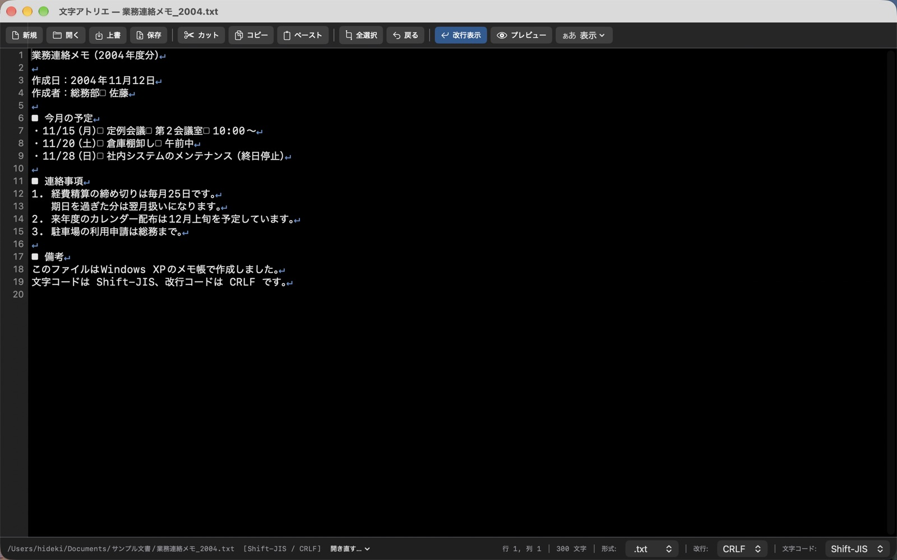
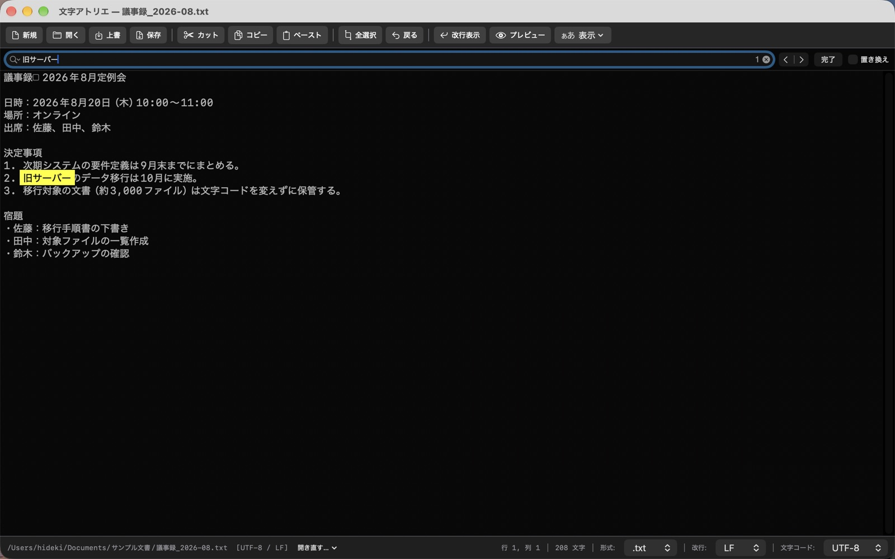
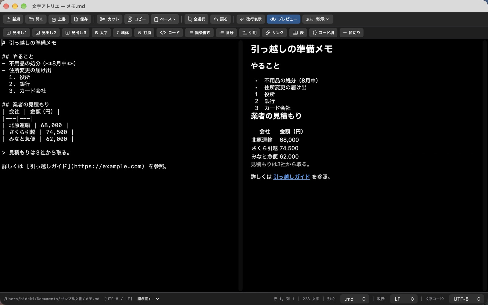
Mac（クリーム背景）
「表示」メニューの「配色」で、黒背景とクリーム背景を切り替えられます。明るい部屋や、紙に近い見た目で読みたいときに。
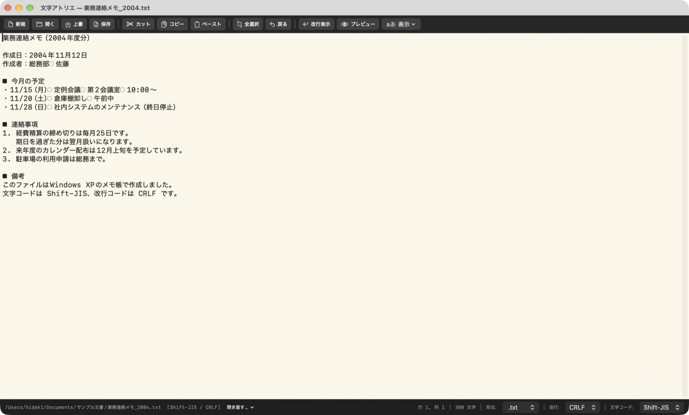
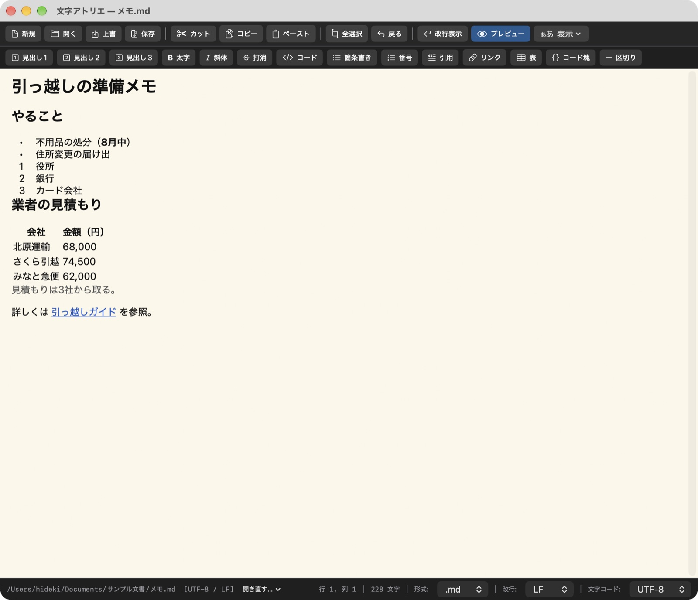
iPhone
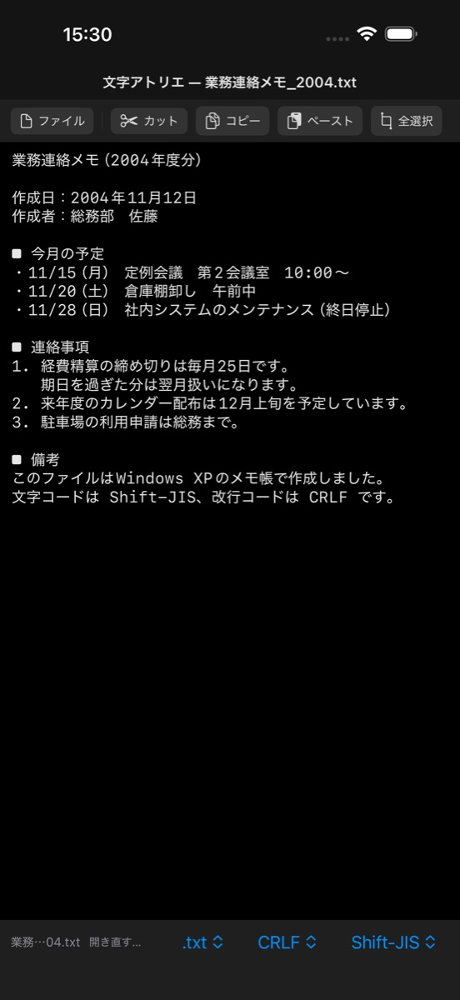
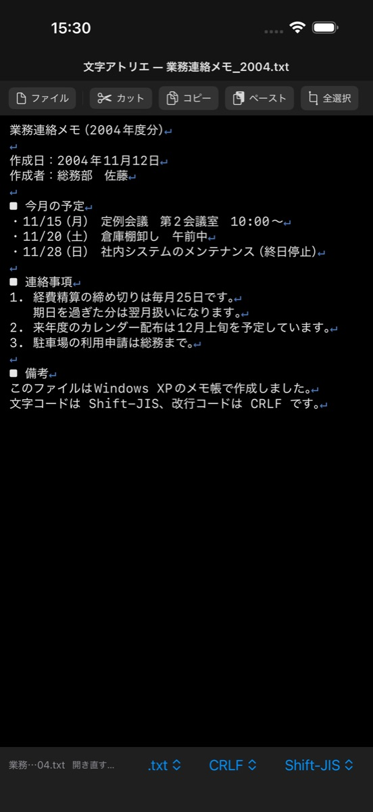
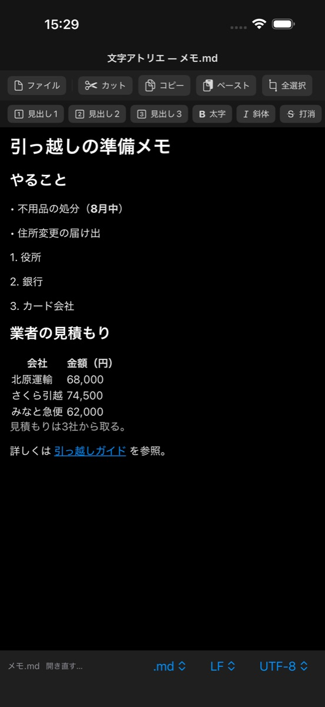
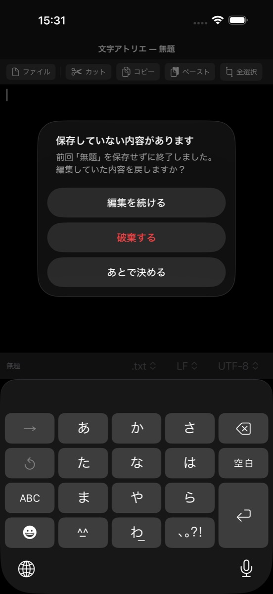
iPhone（クリーム背景）
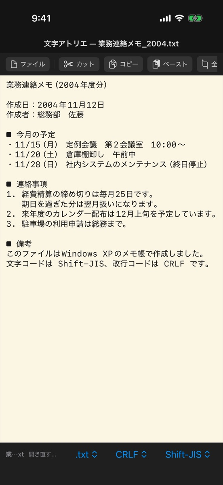
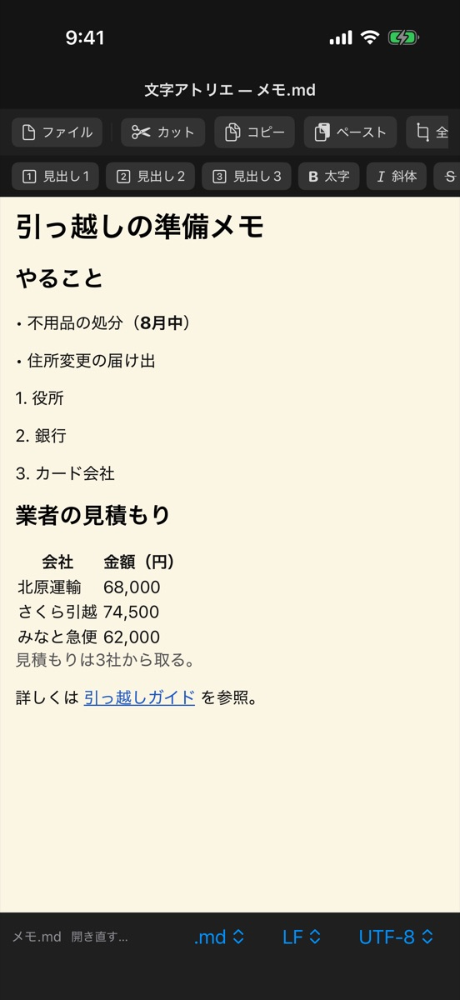
使い方
開く・直す・上書。基本はこれだけです。
Mac
- ツールバーの「開く」（⌘O）でファイルを選ぶか、Finder で .txt / .md / .html をダブルクリックします。
- 画面下に、見分けた文字コードと改行コードが出ます。
- 編集して「上書」（⌘S）を押すと、開いたときと同じ文字コード・改行コードで保存されます。
- 形式を変えたいときは、画面下のメニューで文字コード・改行コード・拡張子を選び直してから「保存」（⇧⌘S）します。
iPhone・iPad
- 上の「ファイル」→「開く…」で、本体・iCloud Drive・外付けストレージのテキストを選びます。「ファイル」アプリでファイルを長押し →「共有」→「文字アトリエ」でも開けます。
- 画面下に、見分けた文字コードと改行コードが出ます。
- 編集して「ファイル」→「上書」を押すと、開いたときと同じ形式で、同じ場所に書き戻します。
- 新しく書いたものは「ファイル」→「保存（名前を付けて）」で名前を付け、保存先のフォルダを選びます。形式を変えたいときは、先に画面下のメニューで選び直します。
Markdown を書くとき
- 形式が .md のとき、ツールバーの下に記法のボタン列（見出し・太字・箇条書き・番号・引用・リンク・表・コードなど）が出ます。選んだ文字を囲む、行の先頭に記号を付ける、ひな形を入れる、の3通りの動きです。
- 「プレビュー」で書式どおりの表示に切り替わり、入力が止まると自動で更新されます。Mac と iPad では「表示」メニューの「プレビューの表示方法」で、編集画面の横に並べる（2画面）か、切り替える（1画面）かを選べます。iPhone は切り替えて表示します。
- プレビューの中の URL やメールアドレスを押すと、ブラウザ（メールアドレスはメールアプリ）で開きます。
- プレビューは画像を表示しません。表は簡易表示です。
こんな方に
- 思いついたことを、すぐにメモしたい
- 機能の多いエディタより、軽くて分かりやすいものがいい
- Shift-JIS や CRLF のテキストを、そのままの形式で編集したい
よくある質問
開いたら文字化けしていました
自動の見分けが外れた可能性があります。画面下の「開き直す…」から文字コードを指定して読み直してください（読めない文字コードを選ぶとエラーになり、本文は変わりません）。それでも直らないときは emc.hs07@gmail.com へお知らせください。
対応している文字コードは？
読み込み・保存とも UTF-8（BOM あり／なし）、Shift-JIS（CP932 を含む）、EUC-JP、JIS（ISO-2022-JP）です。改行コードは CRLF と LF です。
Windows で開いたときに改行が消えないようにするには？
画面下の「改行」が CRLF になっていれば、Windows のメモ帳でも正しく改行されます。Windows で作られたファイルを開いた場合は、自動で CRLF になります。
「改行表示」を押すと、本文に記号が書き込まれますか？
いいえ。改行マークは画面に描くだけで、本文にもコピーにも保存内容にも含まれません。全角スペース（□）とタブ（→）の表示も同じです。
全角スペースやタブが混ざっていないか確かめたい
「表示」メニューの「全角スペース・タブを表示」をオンにすると、全角スペースは □、タブは → で表示されます。行番号や文字の大きさも同じメニューで変えられます。iPhone・iPad では2本指のピンチでも文字の大きさを変えられます。
明るい背景で使いたい
「表示」メニューの「配色」で、黒背景・白文字とクリーム背景・黒文字を切り替えられます。本文とプレビューの色が変わります。
検索や置換はできますか？
Mac は ⌘F で画面上部に検索バーが開き、バーの右端の「置き換え」にチェックを入れると置換の欄が出ます。iPhone・iPad は上の「検索」から開きます。
印刷や PDF にしたい
Mac は「ファイル」メニューの「プリント…」（⌘P）で、プリントパネル左下の「PDF」から PDF として保存できます。iPhone・iPad は「ファイル」→「PDF」で共有シートが開き、「"ファイル"に保存」やプリントが選べます。どちらも白地・黒文字で出力します。
前に開いたファイルをすぐ開きたい
Mac・iPhone・iPad とも、「ファイル」メニューの「最近使ったファイル」から開けます（10件まで）。
カードリーダーや USB メモリのファイルを直接編集できますか？
できます。iPhone・iPad の「ファイル」アプリに表示される場所なら、そのまま開いて同じファイルに上書き保存できます。「ファイル」→「開く…」でカードの中のファイルを選び、編集したら「上書」を押してください。
新しいファイルは「保存（名前を付けて）」で、保存先の「変更…」からカードの中のフォルダを選ぶと直接保存されます（カードを付け直したあとは、保存先を選び直してください）。文字コード（Shift-JIS など）と改行の形式は、開いたときのまま保存します。
アプリ側に写しは作らないため、カードを外したあと iPhone・iPad に中身は残りません（保存せずに閉じた書きかけだけは、次に起動したときに続けるか捨てるかを選べるよう、一時的に残します）。
USB-C のカードリーダーで動くことを確かめています。Lightning のカードリーダーでは確かめていませんが、「ファイル」アプリでの扱いは同じです。Mac でも、Finder に出るカードや USB メモリのファイルをそのまま開いて保存できます。
保存しないままアプリを閉じてしまいました（iPhone・iPad）
次に開いたとき「保存していない内容があります」と出ます。「編集を続ける」で書きかけに戻れます。いらなければ「破棄する」、あとで決めるなら「あとで決める」を選んでください。
ファイルを開くたびにウインドウが増えます（Mac）
いまの仕様です。いらないウインドウは ⌘W で閉じてください。保存していない変更があれば確認が出ます。